FreeRice.com, a website that aims to help end world hunger by donating 10 grains for every multiple choice question answered correctly by the user, had a very outdated website design which had not been updated since 2007. I worked on this project with a team of four other people as a final project for a Human Computer Interaction course I took at UC Irvine in Spring 2019.
We conducted research on our target population through in-person interviews and online surveys, and we found that most users:
We then conducted in-person usability tests as well as cognitive walkthroughs, navigating through the current website and found that the main issues with usability were:
Thus, our redesign targets were:
Users had a delay in completing tasks during usability tests because it took them more time to discover which parts of the site could be interacted with as the color scheme did not provide great contrast to highlight the parts that are important. In addition, when the user hovers over a link or button that can be clicked on, there is no change to show that it can be interacted with, as shown in the screen shot below (hovering over the "Change Subjects" link produces no change in the label).
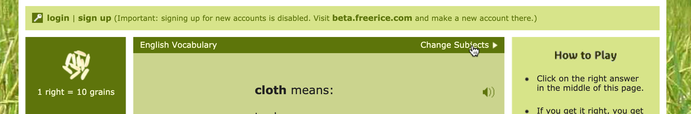
Users also indicated that they thought the overall color scheme of the website was unappealing as everything was the same shade of green. We deduced that this was an issue that needed to be improved, not only to improve the visual appearance of the website but also to make the important and interactive items stand out more to the user.
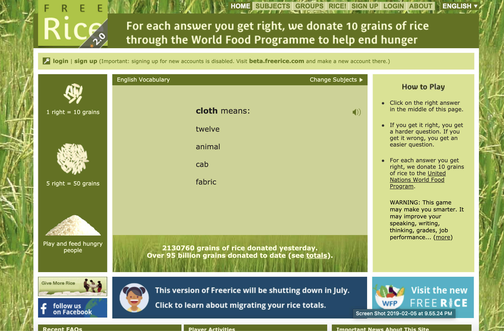
While conducting the cognitive walkthrough task of creating an account, we found that if one tried to use the “Facebook connect” option, the user is redirected to Facebook and the error message in the image below is displayed.
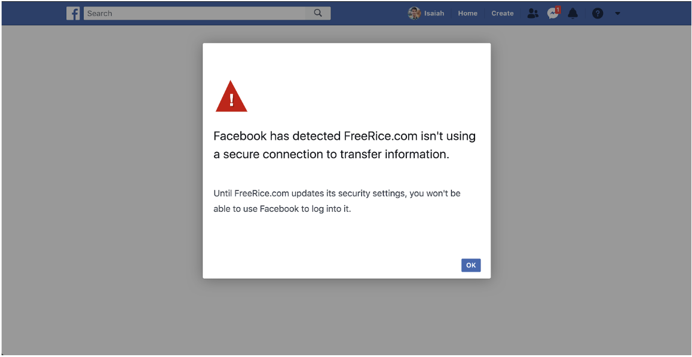
This error message is not informative at all and does not tell the user how to recover from the error that they have encountered. This is bad user experience as it may cause users to become frustrated as well as confused on how to proceed after receiving this message. While conducting the cognitive walkthrough, we were unsure of how to proceed as it was clear that nothing could be done on our side as the user to resolve the issue. In addition, over 50% of our users who completed the usability test of creating an account encountered this error message and were not able to recover from it as discovered through listening to their thought process with the think-aloud method. Thus, we decided that this was clearly a problem that needed to be resolved through better design to help the user recover and even to prevent this error from occurring.
Finding the "Rankings" and "Totals" pages was difficult because they were located under a tab labeled "RICE!", which is a very ineffective and misleading label as it has nothing to do with the pages located in this tab, ultimately causing users to be confused and misguided when trying to find these pages. A screenshot of the "RICE!" tab is shown below.
FreeRice.com does not provide much guidance when trying to create a group and since the website was also confusing to navigate, users would spend a lot of time looking through various pages to try to complete the task. Thus, providing more guidance in the process of group creation was another change we wanted to implement.
Next, we created low-fidelity mockups of possible solutions to the four redesign targets. Below are my sketches for possible solutions.
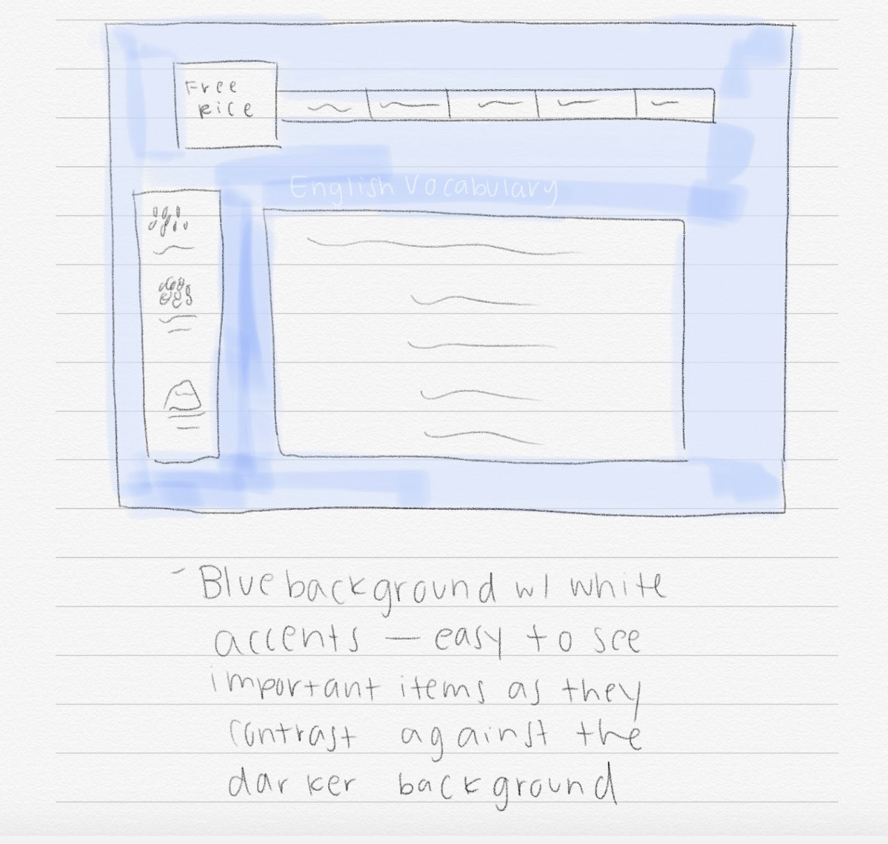
Color Scheme
Storyboard: Original Error Message
Storyboard: ReDesigned Error Message
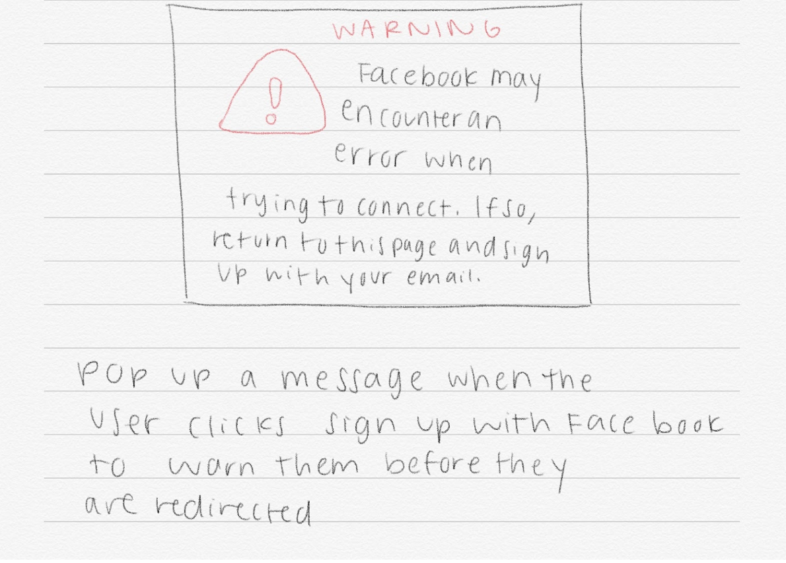
Error Message
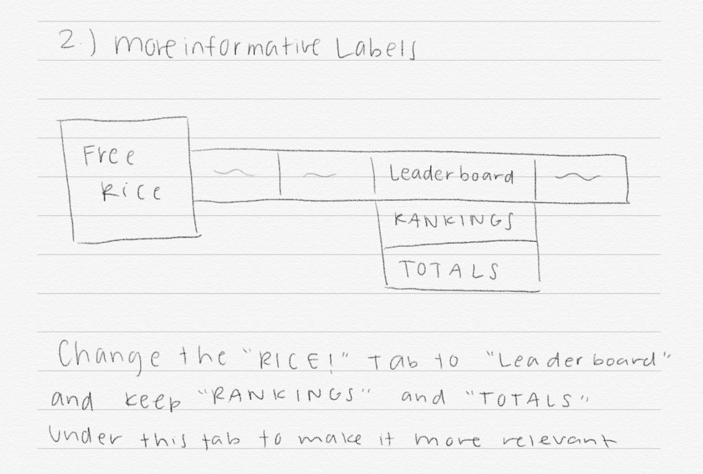
More Informative Labels
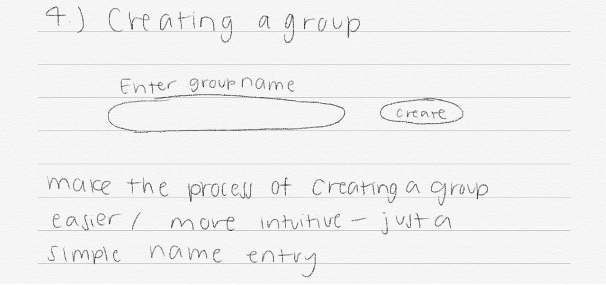
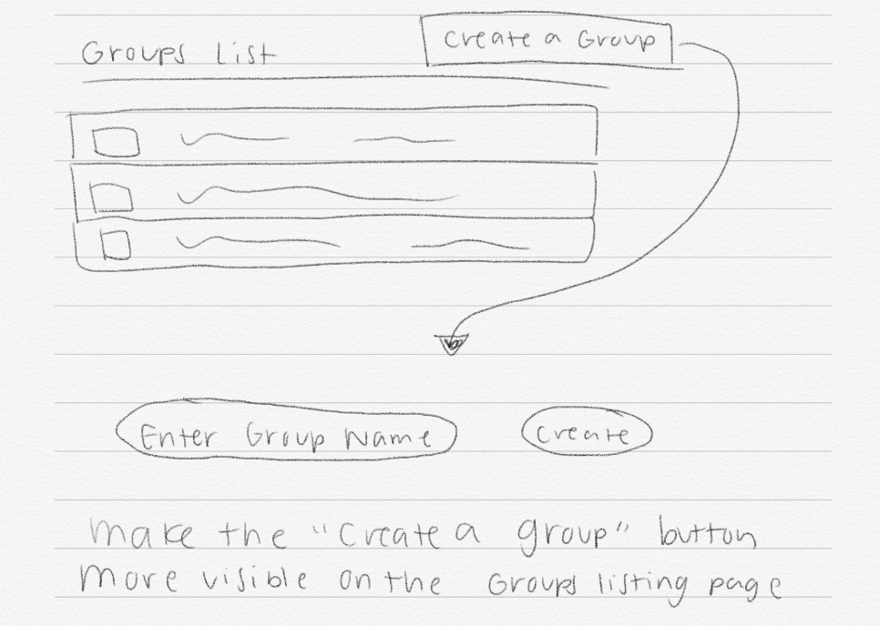
Group Creation
To create the mockups, I used InVision Studio.
We decided on a lighter blue color because the previous website had a more cluttered background image of green plants on top of multiple shades of green. Overall, we hoped to make the color scheme more visually appealing as well as create a greater contrast from the background and the important aspects of the website, so we designed the entire background to have a light blue shade and colored important areas dark blue or white which stands out a lot more than the subtle changes in shades of green that the original website employed. In addition, we removed the background image of green grass because we felt that this did not add any value and instead caused the website to look more cluttered and created distractions for the users.
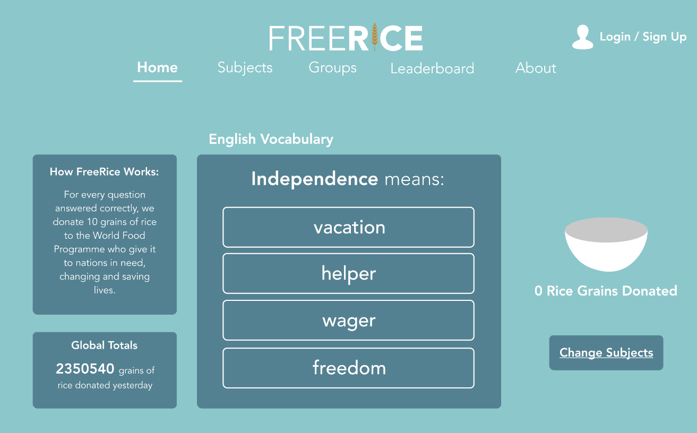
In this redesign, the error message that would pop up after the user clicks on the “Continue with Facebook” button is shown. It directly tells the user what will happen: they will be redirected to the Facebook website, and an error may occur. It is very specific and tells the user exactly what they should do to resolve the issue, rather than being vague and unhelpful as the original error message is. In addition, it is very easy to understand as it does not use any technical jargon and avoids using negative words or placing the blame on the user, which can be off-putting to anyone who encounters an error message as such. Overall, it is a great improvement from the previous message as it gives direction to the user on what they should do next rather than leaving them at a dead end without any guidance on how to proceed. The “Continue” button will redirect the user to Facebook, which was their intended action after clicking “Facebook connect” and it is highlighted in blue to guide the user in clicking it. There is also another button labelled “Exit” which closes the message box and leaves the user at the same page they were on in FreeRice.com, in case the user does not want to continue to Facebook and to avoid the error completely.
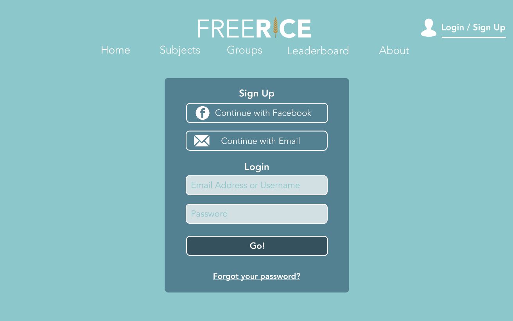
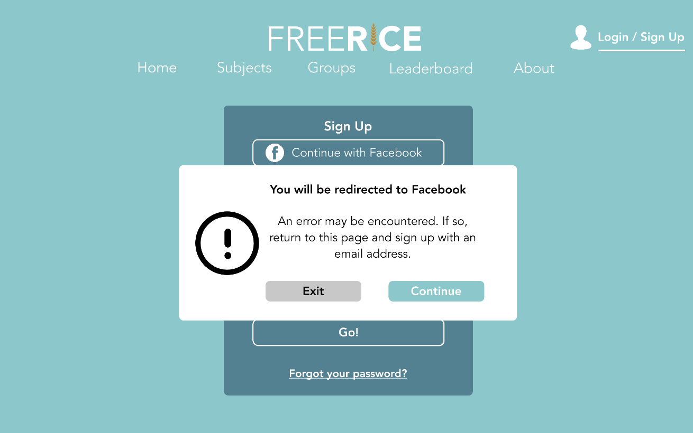
While conducting a cognitive walkthrough for the task involving checking the top player ranking board of this year as
well as when we asked users to navigate to the total donations page on the website during the usability tests, we found
that most users, including ourselves, had trouble navigating to the ranking board as well as the totals pages because the
labels used on the website to indicate where these pages are located are not informative at all.
Another issue that many users encountered during the usability tests was having too many ways to sign up/log in,
as shown in the screenshot below. Having multiple ways for the user to log in seemed to overwhelm users as they were confused
on which one they should click on.
In our redesign, we decided to change the “Rice!” label to “Leaderboard” and include the “Rankings” and “Totals” pages
underneath this as “Leaderboard” is much more informative and relevant. In addition, we decided on including a single button
for “Sign-Up/Login” as well as colored it differently than the rest of the tabs at the top bar so that it would stand out and
indicate to the user that that is where they need to click if they want to complete the login or sign-up actions, which is much
more straightforward than including multiple locations to login or sign-up as it was on the original website. Another aspect
of our redesign includes moving the “Subjects” tab to a column next to the questions, which seems to be more intuitive for the user.
This way they can easily switch between subjects without having to hover over to another tab.
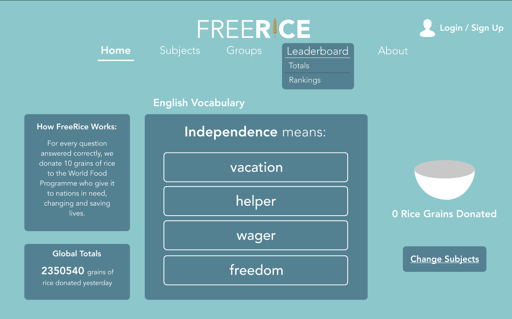
In this mockup, we are addressing the UX problem in that users needed more guidance while creating groups on the website.
While running the cognitive walkthroughs, this task took a lot longer than it should take to complete as we found ourselves
spending a lot of time figuring out how to navigate the process and looking around various pages on the website than on actually
completing the task. The website does not give clear usability directions for the user to figure out how to create a group,
resulting in frustrations that may result in the user leaving FreeRice.com and using an alternative website, thus proving to be an
issue that needed a solution.
In our redesign, we make it apparent that the user is able to create a group by including “Show Groups” and “Create Group” in a
drop down menu when the user hovers their mouse over the “Groups” tab. After pressing the “Create Group” button, the system will
first check user’s login status. If users are not logged into an account, a login page will show up and prompt the user for their
account username and password. After the user logs in, they will be prompted to enter a group name and click the “Create Group” button
which is easily found in the middle of the page. The user can figure out where each button on the screen is as well as and what each
button does effortlessly since there are only a couple of buttons on the page and each is labeled appropriately. This design is simpler
and much easier to use than the original website because of the limited amount of options and the centered design in which every
important functionality is clearly displayed and not hidden. Next, the user will be prompted to create a description of the group
which they can enter into the text box located in the middle of the page. The user then clicks the “Next” button when they are done
typing, which is in the lower right hand corner of the page. Finally, user needs to choose the categories for the new group from the
checkboxes provided in the next screen. After user chooses their favorite categories and clicks on the “Finish” button, the group
will be created successfully and the user will be redirected to the group management page.
We believe that this redesign of the flow in creating a group is much more streamlined and easier to navigate than the
original website’s method. It does not contain any hidden features or buttons that are not obvious to the user, and ensures that
the proper amount of guidance is included.
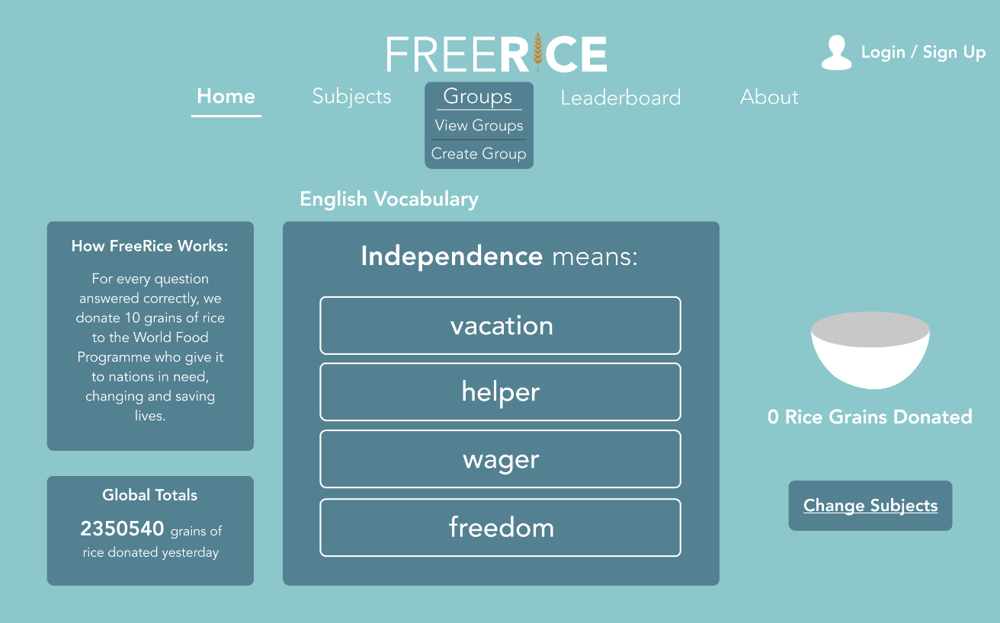
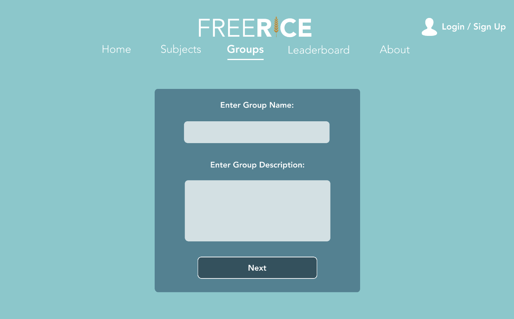
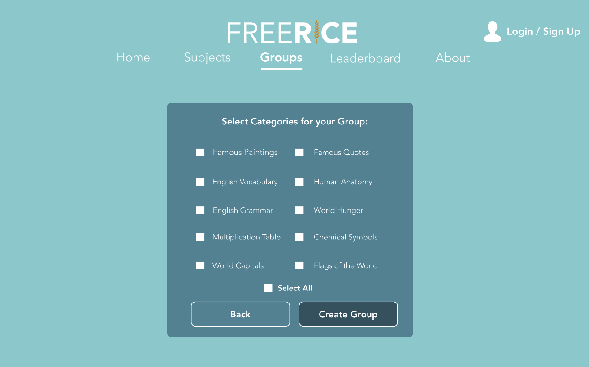